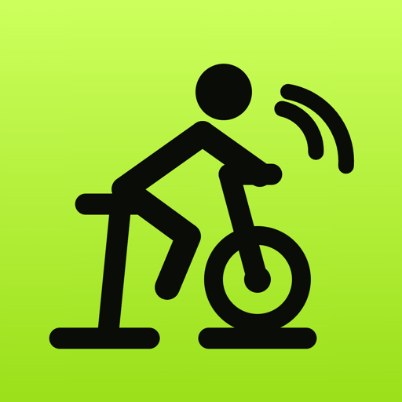

UPCYCLE · PRESSE

Dein Heimtrainer verstaubt? Upcycle ihn.
Auf einen Blick
- App
- Upcycle (App Store: „Smart Heimtrainer – Upcycle“)
- Was
- Macht Heimtrainer und Spinning-Bikes mit Bluetooth zum Smart-Trainer
- Geräte
- iPhone, iPad, Apple Watch, Mac mit Apple-Chip
- Preis
- Kostenlos laden; Upcycle Pro als Einmalkauf, kein Abo
- Sprachen
- Deutsch, Englisch, Französisch, Spanisch, Italienisch, Niederländisch, Polnisch
- Datenschutz
- Kein Konto, keine Datenerfassung – Gesundheitsdaten bleiben auf dem Gerät
- Erscheint
- Dezember 2026 · Beta jetzt über TestFlight
- Entwickler
- Louis Klinke, Indie-Entwickler aus Deutschland
- Kontakt
- info@klinkewebdesign.com
Die Idee
Viele Heimtrainer stehen kaum genutzt in Wohnzimmern und Kellern: Die Hersteller-App nervt oder will ein Abo, und mit Zwift oder MyWhoosh redet das Bike nicht. Ein neues Smart-Bike kostet schnell 1.000 bis 3.500 Euro. Upcycle geht den anderen Weg – aufrüsten statt neu kaufen. Die iPhone-App verbindet sich per Bluetooth mit dem vorhandenen Bike, zeigt Leistung, Trittfrequenz und Widerstand, nimmt den Puls von der Apple Watch, führt durch Trainings und meldet das Bike bei Rad-Apps wie MyWhoosh, Zwift oder Rouvy als Smart-Trainer an. Daher der Name.
Kurztext zum Übernehmen
Upcycle macht günstige Heimtrainer und Spinning-Bikes smart: Die iPhone-App liest das Bike per Bluetooth aus, zeigt Watt, Trittfrequenz und den Puls der Apple Watch und verbindet es als Smart-Trainer mit MyWhoosh, Zwift oder Rouvy. Ohne Konto, ohne Abo – Pro gibt es als Einmalkauf. Entwickelt von einem Indie-Entwickler aus Deutschland.
Funktionen
- Live-Werte: Watt (gemessen oder aus Widerstand und Trittfrequenz geschätzt), Trittfrequenz, Tempo, Widerstand
- Puls von der Apple Watch, Watch-App mit Widerstand über die Digital Crown
- Brücke zu MyWhoosh, Zwift, Rouvy: das Bike erscheint dort als Smart-Trainer (Bluetooth FTMS), inkl. ERG-Modus
- Trainingsprogramme, Zufallstrainings, eigene Workouts und .zwo-Import, FTP-Test
- Verlauf mit Diagrammen, Apple Health, Live-Aktivität, Widgets, Export als TCX/FIT
- Unterstützte Bikes: PitPat/DeerRun und Bikes mit FTMS bestätigt, rund 30 weitere Marken als Beta – Liste
Video
Bilder


App-Screenshots


Store-Bilder


PRESS KIT · ENGLISH
Your exercise bike gathering dust? Upcycle it.
- App
- Upcycle (App Store: “Smart Exercise Bike – Upcycle”)
- What
- Turns Bluetooth exercise and spin bikes into smart trainers
- Devices
- iPhone, iPad, Apple Watch, Apple silicon Mac
- Price
- Free download; Upcycle Pro is a one-time purchase, no subscription
- Privacy
- No account, no data collected – health data stays on the device
- Release
- December 2026 · beta now on TestFlight
- Developer
- Louis Klinke, indie developer from Germany
- Contact
- info@klinkewebdesign.com
Upcycle makes budget exercise and spin bikes smart: the iPhone app reads the bike over Bluetooth, shows watts, cadence and Apple Watch heart rate, and connects it to MyWhoosh, Zwift or Rouvy as a smart trainer. No account, no subscription – Pro is a one-time purchase. Made by an indie developer from Germany.


Hilfe · Bikes · Datenschutz · Impressum